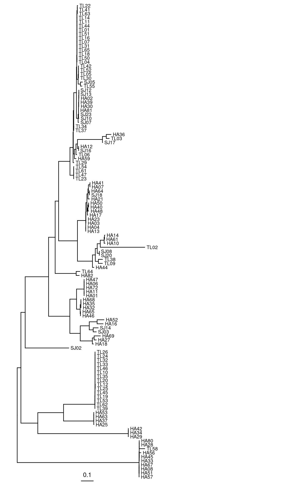
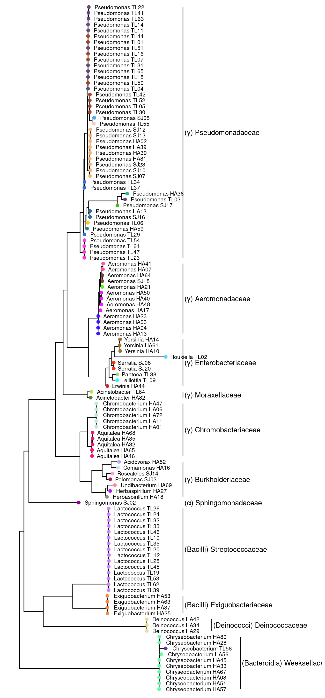

Clustering/phylogenetics of 16S rRNA sequences from duckweed SynCom
1 Setup
Loads required libraries
2 Read and format
Read 16S rRNA fasta sequences from the prior step.
Convert to a DNA stringset object
3 Redundancy
All sequences are unique which is expected
[1] FALSE FALSE FALSE FALSE FALSE FALSE FALSE FALSE FALSE FALSE FALSE FALSE
[13] FALSE FALSE FALSE FALSE FALSE FALSE FALSE FALSE FALSE FALSE FALSE FALSE
[25] FALSE FALSE FALSE FALSE FALSE FALSE FALSE FALSE FALSE FALSE FALSE FALSE
[37] FALSE FALSE FALSE FALSE FALSE FALSE FALSE FALSE FALSE FALSE FALSE FALSE
[49] FALSE FALSE FALSE FALSE FALSE FALSE FALSE FALSE FALSE FALSE FALSE FALSE
[61] FALSE FALSE FALSE FALSE FALSE FALSE FALSE FALSE FALSE FALSE FALSE FALSE
[73] FALSE FALSE FALSE FALSE FALSE FALSE FALSE FALSE FALSE FALSE FALSE FALSE
[85] FALSE FALSE FALSE FALSE FALSE FALSE FALSE FALSE FALSE FALSE FALSE FALSE
[97] FALSE FALSE FALSE FALSE FALSE FALSE FALSE FALSE FALSE FALSE FALSE FALSE
[109] FALSE FALSE FALSE FALSE FALSE FALSE FALSE FALSE FALSE FALSE4 Cluster
Show/hide code
Partitioning sequences by 4-mer similarity:
================================================================================
Time difference of 0.05 secs
Sorting by relatedness within 32 groups:
iteration 1 of up to 43 (100.0% stability)
Time difference of 0.05 secs
Clustering sequences by 10-mer similarity:
================================================================================
Time difference of 0.22 secs
Clusters via relatedness sorting: 100% (0% exclusively)
Clusters via rare 4-mers: 100% (0% exclusively)
Estimated clustering effectiveness: 100%5 Classify (IDTAXA)
Using IDTAXA following the approach shown here.
Show/hide code
set.seed(234676)
# load the training data set
load(here::here("_data_raw", "idtaxa", "GTDB_r226-mod_April2025.RData"))
# classify the sequences
syncom16s_ids <- IdTaxa(syncom16s_seqs,
trainingSet,
strand="both", # or "top" if same as trainingSet
threshold=60, # 60 (cautious) or 50 (sensible)
processors=NULL) # use all available processors
# reset random seed
rm(.Random.seed, envir=globalenv())6 Classify (Blastn)
These steps need to be run outside of R/Rstudio
First we need to download and install NCBI blast+ suite (I am using v2.16.0) and download the 16S_ribosomal_RNA database.
blastn -num_threads 12 -db 16S_ribosomal_RNA -query 16S_rRNA_SynCom.fna -dust no -max_target_seqs 5 -out 16S_rRNA_SynCom_v_blast16SDB.tsv -outfmt "6 qseqid sseqid pident length mismatch gapopen qstart qend sstart send evalue bitscore staxid"The last column contains the taxonomy ID from the NCBI 16S Ribosomal database. We will just take the taxonomic lineage of the best hit
csvtk tab2csv 16S_rRNA_SynCom_v_blast16SDB.tsv | csvtk cut -f1,13 | csvtk spread -k1 -v2 | sed 's/^,//g' | csvtk transpose | cut -d ";" -f1 | csvtk cut -f2,1 | csvtk csv2tab > a
csvtk tab2csv 16S_rRNA_SynCom_v_blast16SDB.tsv | csvtk cut -f1,13 | csvtk spread -k1 -v2 | sed 's/^,//g' | csvtk transpose | cut -d ";" -f1 | csvtk cut -f2 | taxonkit lineage -n -L > b
# combine into one file
paste a b > blastn_lineage_best_hit.tsv
rm a bNow read this file back into R
Show/hide code
Rows: 118 Columns: 4
── Column specification ────────────────────────────────────────────────────────
Delimiter: "\t"
chr (2): X2, X4
dbl (2): X1, X3
ℹ Use `spec()` to retrieve the full column specification for this data.
ℹ Specify the column types or set `show_col_types = FALSE` to quiet this message.7 Combine clustering and classification
8 16S rRNA sequence alignment
We start with DNA sequences and convert to RNA so that DECIPHER can leverage structural information from the RNA
Align the sequences
From DECIPHER documentation on sequence alignment
5.2 Example: Non-coding RNA sequences Much like proteins, non-coding RNAs often have a conserved secondary structure that can be used to improve their alignment. The PredictDBN function will predict base pairings from a sequence alignment by calculating the mutual information between pairs of positions. If RNA sequences are given as input, AlignSeqs will automatically use the output of PredictDBN to iteratively improve the alignment. Providing an RNAStringSet also causes single-base and double-base substitution matrices to be used, and is preferable to providing a DNAStringSet when the sequences are non-coding RNA. The type of the input sequences can easily be converted to RNA, as shown below.
9 Phylogenetic tree building
Following maximum likelihood tutorial DECIPHER documentation on phylogenetic trees
This step constructs a phylogenetic tree using the general time reversable (GTR) model with a discrete Gamma model (Yang, 1994) with the default 4 rate categories. Branch support is depicted using aBayes probabilities, which is a Bayesian-like transformation of an approximate Likelihood Ratio Test (Anisimova et al., 2011).
Show/hide code
# this function adds an 'edgetext' attribute that is recognized by WriteDendrogram so that
# branch support values (aBayes) are written properly
add_boots <- function(node){
s <- attr(node, "probability")
if (!is.null(s))
attr(node, "edgetext") <- formatC(as.numeric(s), digits=2, format="f")
return(node)
}
syncom16s_seqs_mltree <- dendrapply(syncom16s_seqs_mltree, add_boots)Save ML tree as newick file
Tree building results
Fitting initial tree to model:
GTR+G4 -ln(L) = 15520, AICc = 31633, BIC = 32781
Optimizing up to 400 candidate trees:
Tree #136. -ln(L) = 15395.993 (0.000%), 9 Climbs, 0 Grafts of 7
Finalizing the best tree (#130):
-ln(L) = 15395.993 (0.000%), 1 Climb
Model parameters:
Frequency(A) = 0.244
Frequency(C) = 0.223
Frequency(G) = 0.312
Frequency(T) = 0.221
Rate A <-> C = 0.816
Rate A <-> G = 1.978
Rate A <-> T = 1.262
Rate C <-> G = 0.677
Rate C <-> T = 3.029
Rate G <-> T = 1.000
Alpha = 0.302
Time difference of 1090.3 secs10 Phylogenetic tree plotting
ggtree v3.17.1.001 Learn more at https://yulab-smu.top/contribution-tree-data/
Please cite:
S Xu, Z Dai, P Guo, X Fu, S Liu, L Zhou, W Tang, T Feng, M Chen, L
Zhan, T Wu, E Hu, Y Jiang, X Bo, G Yu. ggtreeExtra: Compact
visualization of richly annotated phylogenetic data. Molecular Biology
and Evolution. 2021, 38(9):4039-4042. doi: 10.1093/molbev/msab166
Attaching package: 'ggtree'The following object is masked from 'package:Biostrings':
collapseThe following object is masked from 'package:IRanges':
collapseThe following object is masked from 'package:S4Vectors':
expandThe following object is masked from 'package:tidyr':
expandtreeio v1.32.0 Learn more at https://yulab-smu.top/contribution-tree-data/
Please cite:
LG Wang, TTY Lam, S Xu, Z Dai, L Zhou, T Feng, P Guo, CW Dunn, BR
Jones, T Bradley, H Zhu, Y Guan, Y Jiang, G Yu. treeio: an R package
for phylogenetic tree input and output with richly annotated and
associated data. Molecular Biology and Evolution. 2020, 37(2):599-603.
doi: 10.1093/molbev/msz240
Attaching package: 'treeio'The following object is masked from 'package:Biostrings':
maskGoal is to produce a tree that has for tip labels the Genus assigned by IDTAXA + the strain identifier, with different internal nodes labeled by coarser taxonomic grouping. The clusters assigned by clusterizer will be represented by different colors at the tips.
First lets look at the tree with just the identifiers on the leaves
Show/hide code

We can also look at the internal node numbering by rendering the tree as a dataframe
Show/hide code
First we need to get our naming scheme set up
Show/hide code
newtipnames <- syncom16s_idtx_lineage_info %>%
mutate(genus = stringr::str_extract(genus, "(^[:alpha:]*).*", group = 1)) %>%
mutate(genus = case_when(is.na(genus) | genus == "unclassified" ~ stringr::str_extract(ncbi_best_species, "^[:alpha:]*"),
TRUE ~ genus)) %>%
mutate(newname = paste(genus, id)) %>%
mutate(cluster = paste0("c", cluster)) %>%
dplyr::select(id, newname, cluster, genus, order, family)First we need to generate a color palette that lets us distinguish the different colors
Now we need to identify the internal nodes that we want to highlight. We can do this using the MRCA function from ggtree
Code to plot the tree
Show/hide code
offset <- 0.1
p1 <- ggtree(syncom16s_seqs_mltree_nwk, layout="rectangular")
p2 <- p1 %<+% newtipnames +
geom_tiplab(aes(label = newname), size=3, hjust = -0.10) +
geom_tippoint(aes(color = cluster), size = 2) +
scale_color_manual(values = mypal, guide="none") +
# Pseudomonadaceae
geom_cladelab(node=MRCA(syncom16s_seqs_mltree_nwk, "TL22", "TL23"),
label="(γ) Pseudomonadaceae", align=TRUE,
geom='text', offset=offset) +
# Aeromonadaceae
geom_cladelab(node=MRCA(syncom16s_seqs_mltree_nwk, "HA41", "HA04"),
label="(γ) Aeromonadaceae", align=TRUE,
geom='text', offset=offset) +
# Enterobacteriaceae
geom_cladelab(node=MRCA(syncom16s_seqs_mltree_nwk, "HA14", "HA44"),
label="(γ) Enterobacteriaceae", align=TRUE,
geom='text', offset=offset) +
# Moraxellaceae
geom_cladelab(node=MRCA(syncom16s_seqs_mltree_nwk, "TL64", "HA82"),
label="(γ) Moraxellaceae", align=TRUE,
geom='text', offset=offset) +
# Chromobacteriaceae
geom_cladelab(node=MRCA(syncom16s_seqs_mltree_nwk, "HA47", "HA65"),
label="(γ) Chromobacteriaceae", align=TRUE,
geom='text', offset=offset) +
# Burkholderiaceae
geom_cladelab(node=MRCA(syncom16s_seqs_mltree_nwk, "HA52", "HA18"),
label="(γ) Burkholderiaceae", align=TRUE,
geom='text', offset=offset) +
# Sphingomonadaceae
geom_cladelab(node=23,
label="(α) Sphingomonadaceae", align=TRUE,
geom='text', offset=offset) +
# Streptococcaceae
geom_cladelab(node=MRCA(syncom16s_seqs_mltree_nwk, "TL12", "TL39"),
label="(Bacilli) Streptococcaceae", align=TRUE,
geom='text', offset=offset) +
# Exiguobacteriaceae
geom_cladelab(node=MRCA(syncom16s_seqs_mltree_nwk, "HA63", "HA25"),
label="(Bacilli) Exiguobacteriaceae", align=TRUE,
geom='text', offset=offset) +
# Deinococcaceae
geom_cladelab(node=MRCA(syncom16s_seqs_mltree_nwk, "HA42", "HA29"),
label="(Deinococci) Deinococcaceae", align=TRUE,
geom='text', offset=offset+0.2) +
# Weeksellaceae
geom_cladelab(node=MRCA(syncom16s_seqs_mltree_nwk, "HA56", "HA57"),
label="(Bacteroidia) Weeksellaceae", align=TRUE,
geom='text', offset=offset+0.4) +
xlim(NA, 2)